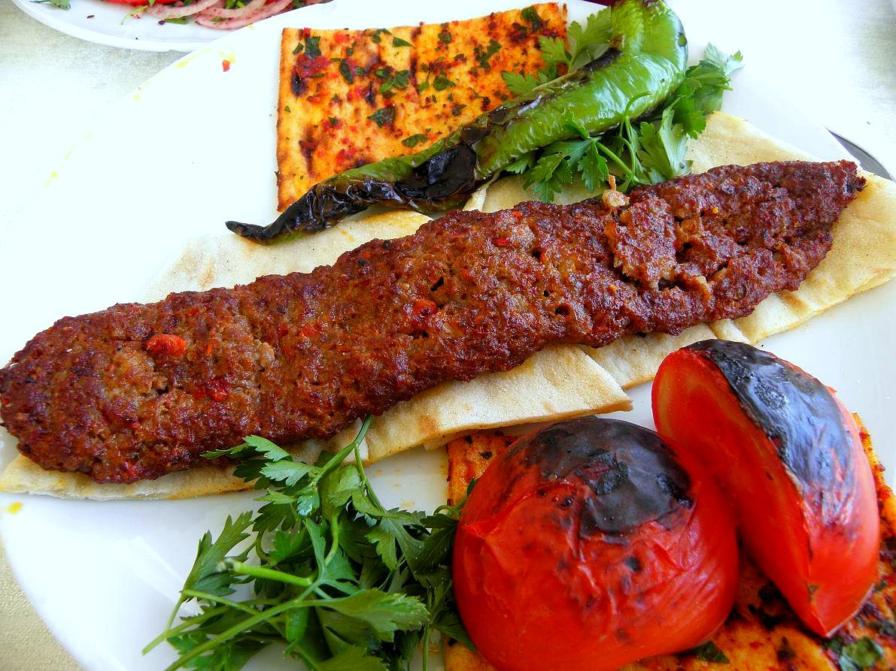

Home
Adana Kebap

Açıklama
Adana kebap, Türk mutfağının en sevilen yemeklerinden biridir.
Genellikle şişte pişirilir ve yanında lavaş ile servis edilir.
Malzemeler
- 500 gram kıyma
- 1 adet soğan
- 2-3 adet yeşil biber
- Tuz
- Karabiber
- Yeterince lavaş
Adımlar
-
Kıymayı bir kaba alın, rendelenmiş soğanı, doğranmış yeşil biberleri,
tuz ve karabiberi ekleyin. İyice yoğurun.
- Hazırladığınız harcı şişlere geçirin.
- Izgarada veya mangalda pişirin.
- Yanında lavaş ile sıcak servis yapın.